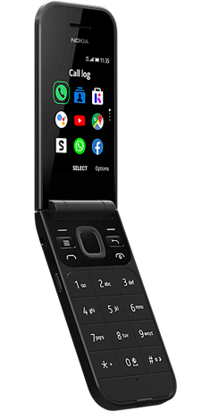

Nokia 2720 Flip (nokia-beatles)
|  | |
| Manufacturer | Nokia |
|---|---|
| Name | 2720 Flip |
| Codename | nokia-beatles |
| Released | 2019 |
| Category | testing |
| Original software | KaiOS |
| Original version | 2.5.2 |
| postmarketOS kernel | 3.10.49 |
| Hardware | |
| Chipset | Qualcomm Snapdragon 205 (MSM8905) |
| CPU | 2x 1.1 GHz Cortex-A7 |
| GPU | Adreno 304 |
| Display | 240x320 TFT |
| Storage | 4 GB |
| Memory | 512 MB |
| Architecture | armv7 |
{kind=link}
| USB Networking |
Works
|
|---|---|
| Flashing |
Broken
|
| Touchscreen |
Unavailable
|
| Display |
Works
|
| WiFi | |
| FDE | |
| Mainline | |
| Battery | |
| 3D Acceleration | |
| Audio | |
| Bluetooth | |
| Camera | |
| GPS | |
| Mobile data | |
| SMS | |
| Calls | |
| USB OTG | |
| NFC | |
| Accelerometer |
Unavailable
|
|---|---|
| Magnetometer | |
| Ambient Light | |
| Proximity | |
| Hall Effect | |
| Barometer | |
| Power Sensor | |
| Camera Flash | |
|---|---|
| Keyboard | |
| Touchpad | |
| USB-A | |
| HDMI/DP | |
| Ir TX | |
| Ir RX | |
| Stylus | |
| Haptics | |
| Ethernet | |
| FOSS bootloader | |
Contributors
Users owning this device
- DolphinChips (Notes: Mainline soon I hope)
- GloomyJD (Notes: Works)
- Huevo5050 (Notes: Flashing)
Prerequisites
- rooted phone
- microSD card
Installation
The only method tested assumes flashing boot.img to the recovery partition and rootfs to the microSD card |
fastboot reported to be locked on this phone, you will need to flash everything from the KaiOS directly instead:
- install
rootfsto the microSD withpmbootstrap install --sdcard=/dev/sdX - put the card into the phone and boot it to the KaiOS
- export
boot.imgto the/tmpon your host machine:pmbootstrap export - push
boot.imgto the/sdcard:adb push /tmp/postmarketOS-export/boot.img-nokia-beatles /sdcard/ - (optional) backup
recoverypartition:adb shell "dd if=/dev/block/bootdevice/by-name/recovery of=/sdcard/backup_recovery.img bs=2048" - flash
recoverypartition:adb shell "dd if=/sdcard/boot.img-nokia-beatles of=/dev/block/bootdevice/by-name/recovery bs=2048" - reboot to the freshly flashed pmOS:
adb reboot recovery
You will be able to boot to pmOS by turning on the phone while holding the Volume Up button.
Display
Main display works fine with msm-fb-refresher.
External display seems to use custom mdss-spi-panel driver which is not publicly available.
WLAN
Out-of-tree prima wlan kernel module available here.
Firmware can be extracted from the following mount points:
system => /system/etc/firmware/wlan/prima/WCNSS_cfg.dat
userdata => /misc/wifi/WCNSS_qcom_cfg.ini
persist => /WCNSS_qcom_wlan_nv.bin
persist => /WCNSS_wlan_dictionary.dat
To enable the module in pmOS run the following (as root):
# echo 1 > /dev/wcnss_wlan
# echo sta > /sys/module/wlan/parameters/fwpath
Unfortunately, nmcli didn't work for me, but iw dev wlan0 scan did the trick. Won't connect to any network though.
Modem
Followed an approach described here with no luck: getting smd_pkt_open: DATA5_CNTL open failed -19 in dmesg while trying to access the modem.
With echo 1 > /sys/kernel/boot_adsp/boot modem at least boots up (using rmt_storage binary ripped out of KaiOS), but DATA5_CNTL is still unavailable.
Allocation tables (output of /sys/kernel/debug/smd/ch) is here.
According to the following lines in dmesg, it looks like something tries to reach USB diag device which is not available:
[ 502.693072] diag: USB ch diag is not connected
[ 502.693080] diag: In diag_process_smd_read_data, diag_device_write error: -19
Tried to set the following USB configuration options with no luck as well:
# echo "0" > /sys/class/android_usb/android0/enable
# echo "diag" > /sys/class/android_usb/android0/f_diag/clients
# echo "smd" > /sys/class/android_usb/android0/f_serial/transports
# echo "qti,bam" > /sys/class/android_usb/android0/f_rmnet/transports
# echo "diag,serial_smd,rmnet_qti_bam" > /sys/class/android_usb/android0/functions
# echo "1" > /sys/class/android_usb/android0/enable
It is possible that the modem requires sending a DPM (data port management) QMI command to open up the DATA5_CNTL channel, as done here for the Nokia 8110 4G.
Partition layout
DDR -> /dev/block/mmcblk0p24
aboot -> /dev/block/mmcblk0p9
abootbak -> /dev/block/mmcblk0p10
boot -> /dev/block/mmcblk0p27
cache -> /dev/block/mmcblk0p31
config -> /dev/block/mmcblk0p19
devinfo -> /dev/block/mmcblk0p23
fsc -> /dev/block/mmcblk0p5
fsg -> /dev/block/mmcblk0p25
hwcfg -> /dev/block/mmcblk0p21
keystore -> /dev/block/mmcblk0p18
misc -> /dev/block/mmcblk0p16
modem -> /dev/block/mmcblk0p22
modemst1 -> /dev/block/mmcblk0p3
modemst2 -> /dev/block/mmcblk0p4
oem -> /dev/block/mmcblk0p32
pad -> /dev/block/mmcblk0p15
persist -> /dev/block/mmcblk0p29
recovery -> /dev/block/mmcblk0p28
rpm -> /dev/block/mmcblk0p11
rpmbak -> /dev/block/mmcblk0p12
sbl1 -> /dev/block/mmcblk0p7
sbl1bak -> /dev/block/mmcblk0p8
sec -> /dev/block/mmcblk0p26
simlock -> /dev/block/mmcblk0p20
splash -> /dev/block/mmcblk0p17
ssd -> /dev/block/mmcblk0p6
system -> /dev/block/mmcblk0p30
traceability -> /dev/block/mmcblk0p1
tunning -> /dev/block/mmcblk0p2
tz -> /dev/block/mmcblk0p13
tzbak -> /dev/block/mmcblk0p14
userdata -> /dev/block/mmcblk0p33